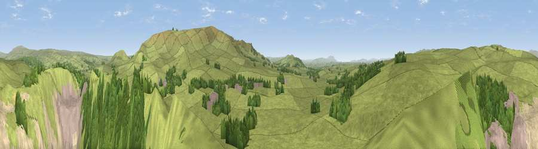

Viewpoint near Cracoe
#9580 in England · top 13% of its area beats it · near CracoeWhere it is
The exact computed spot (SD 97525 61075). Click the marker for map links.
The view, rendered

A 360° render of this exact spot computed from the terrain model, tree cover and land cover — summer colours, afternoon light, calibrated against photographs of famous viewpoints. Real trees, hedges and buildings will differ in detail.
The panorama
Grey silhouette: terrain skyline in each direction (720 bearings, Earth curvature and refraction included). Dashed green: skyline with trees (+15 m) and buildings (+8 m) as obstacles. Blue strip: how far the ground is visible on each bearing.
Where the view opens
Wedge length = distance to the farthest visible ground on that bearing (vegetation-aware). Rings at 10, 25 and 50 km.
What fills the view
53% grassland · 16% woodland · 13% bare ground · 9% built-up · 6% water · 2% cropland
Angular shares of the visible panorama (visual magnitude), not map area. Landscape diversity 0.59 (0–1 Shannon).
Key numbers
More beautiful places nearby
The staircase of upgrades: each row has a higher view potential than everything closer. Driving times are estimates from straight-line distance, calibrated against real road routing — check an actual route before setting out.
| Place | Direction | Drive | Score |
|---|---|---|---|
| Stebden Hill | E · 3 km | ~7 min | 64.5 |
| Cracoe Fell | SE · 3 km | ~7 min | 75.1 |
| Viewpoint near Kettlewell | N · 14 km | ~25 min | 75.6 |
| Viewpoint near Kettlewell | N · 15 km | ~27 min | 76.6 |
| Viewpoint near Bewerley | ENE · 15 km | ~27 min | 76.8 |
| Viewpoint near Buckden | N · 18 km | ~31 min | 77.3 |
| Little Ingleborough | WNW · 26 km | ~42 min | 78.8 |
| Viewpoint near Ingleton | WNW · 27 km | ~43 min | 79.5 |
54.04564, -2.03929 · source: screening · position refined by local search. Computed location — check access rights before visiting.